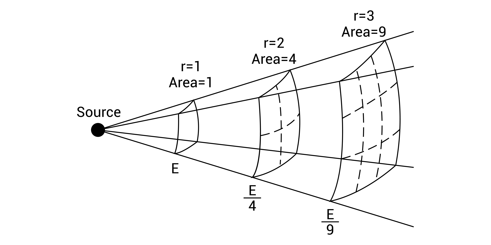

Compendio Técnico: Física de Rayos X y Procesamiento de Señales
De la interacción fotónica a la representación digital
Autor/a
Docencia e Investigación en Ciencias Biomédicas
Fecha de publicación
10 de febrero de 2026
Introducción a la Atenuación Fotónica
La estimación de la absorción de rayos X en un paciente se fundamenta en el principio de atenuación fotónica. Cuando un haz atraviesa el cuerpo, los fotones interactúan con los tejidos, reduciendo la intensidad del haz original antes de alcanzar el detector.
El Modelo Matemático: Ley de Beer-Lambert
Para un haz monoenergético en un medio homogéneo, la intensidad transmitida \(I\) se describe exponencialmente:
\[I = I_0 e^{-\mu x}\]
Donde:
* \(I_0\): Intensidad incidente.
* \(\mu\): Coeficiente de atenuación lineal (\(cm^{-1}\)).
* \(x\): Espesor del tejido.
En medios heterogéneos (anatomía humana), se utiliza la integral de línea:
\[I = I_0 \exp\left( -\int_{L} \mu(s, E) \, ds \right)\]
Mecanismos de Interacción y Coeficiente \(\mu\)
Procesos Físicos
En el rango diagnóstico (\(20-150\) keV), predominan:
1. Efecto Fotoeléctrico: Absorción total (\(\propto Z^3/E^3\)). Genera el contraste anatómico.
2. Efecto Compton: Dispersión inelástica (\(\propto \rho_e\)). Fuente de ruido y dosis dispersa.
Determinación de \(\mu\)
El coeficiente lineal se deriva del coeficiente de atenuación másico (\(\mu/\rho\)) y la densidad física (\(\rho\)):
\[\mu = \left( \frac{\mu}{\rho} \right)_{NIST} \cdot \rho\]
En tomografía (CT), esto se normaliza en Unidades Hounsfield (HU):
\[HU = 1000 \times \frac{\mu_{tejido} - \mu_{agua}}{\mu_{agua} - \mu_{aire}}\]
Procedimiento de Estimación y Parámetros Críticos
Para una estimación profesional de la absorción (energía depositada), deben integrarse los siguientes parámetros:
Factor de Acumulación (\(B\)): Corrige la contribución de la radiación dispersa en geometrías de haz ancho.
Policromaticidad: El haz posee un espectro de energías, lo que induce el Endurecimiento del Haz (Beam Hardening).
Divergencia: Compensación por la ley del cuadrado inverso de la distancia.
Sí, es posible estimar estos parámetros mediante modelos matemáticos deterministas o simulaciones estocásticas. En la física médica y el procesamiento de imágenes, estos factores no se ignoran, sino que se integran en el formalismo de la transferencia radiativa para mejorar la calidad de la reconstrucción y la precisión de la dosis.
A continuación, se detalla el procedimiento técnico para la estimación de cada uno:
1. Estimación de la Policromaticidad
La policromaticidad es la desviación del modelo ideal monoenergético. Se estima mediante la caracterización del espectro del ánodo ().
Modelado analítico: Se utilizan modelos como la Ley de Kramers o algoritmos más precisos como TASMIP (para ánodos de Tungsteno) que generan la fluencia de fotones por cada intervalo de energía (\(keV\)).
Cálculo del Coeficiente Efectivo (\(\mu_{eff}\)): En lugar de un solo \(\mu\), se calcula un promedio pesado por el espectro:
Uso en IA: Se pueden entrenar redes neuronales (como las Physics-Informed Neural Networks o PINNs) para aprender la función de mapeo entre el espesor del objeto y la intensidad detectada, capturando implícitamente la policromaticidad.
2. Estimación de la Divergencia (Ley del Cuadrado Inverso)
La divergencia es un fenómeno puramente geométrico. Dado que el tubo de rayos X actúa como una fuente cuasipuntual, la intensidad disminuye con la distancia ().
Factor de Corrección Geométrica (): Si se conoce la distancia foco-isocentro () y la distancia foco-detector (), la intensidad en cualquier punto se estima como:
En Procesamiento de Imágenes: Esta corrección es trivial pero obligatoria en proyecciones de haz cónico (Cone Beam). Si no se corrige, los píxeles periféricos mostrarían una atenuación artificialmente alta debido a la mayor distancia recorrida y la menor fluencia de fotones por unidad de área.

Corrección por Divergencia
3. Estimación del Factor de Acumulación ()
Este es el parámetro más complejo, ya que depende de la radiación dispersa (Compton) que llega al detector. se define como la relación entre la exposición total y la exposición primaria: .
Fórmulas Empíricas: Existen aproximaciones como la Ecuación de Taylor o la Ecuación de Berger:
Donde y son coeficientes tabulados para cada material y energía.
* Método de Monte Carlo: Es el estándar de oro. Se simulan millones de trayectorias de fotones en un volumen (usando herramientas como Geant4 o MCNP) para cuantificar cuánta radiación dispersa alcanza una coordenada específica del detector.
* Estimación por Grid: En clínica, se usan rejillas antidifusoras. El factor de mejora del contraste () permite estimar cuánto se ha reducido el factor .
Implementación en Python (Ejemplo de Divergencia y Policromaticidad)
Este bloque de código integra la divergencia en la simulación anterior para observar cómo afecta la intensidad final.
import numpy as npdef estimar_fluencia_total(distancias, espesor_tejido, kvp=100): E = np.linspace(10, kvp, 300)# Espectro con policromaticidad S_E =74* (kvp - E) S_E = np.maximum(S_E, 0)# Coeficiente de atenuación (Tejido blando) mu_E =3000* (E**-3) +0.16 intensidades = []for d in distancias:# 1. Corrección por divergencia (1/d^2) f_g = (1.0/ d)**2# 2. Atenuación exponencial integrada I_d = np.trapezoid(f_g * S_E * np.exp(-mu_E * espesor_tejido), E) intensidades.append(I_d)return np.array(intensidades)# Distancias de 50cm a 150cm del focodist = np.linspace(50, 150, 10)I_estimada = estimar_fluencia_total(dist, espesor_tejido=5.0)print(f"Intensidad relativa a 50cm: {I_estimada[0]:.2e}")print(f"Intensidad relativa a 150cm: {I_estimada[-1]:.2e}")
Resumen para su reporte Quarto
Parámetro
Método de Estimación
Impacto en la Imagen
Policromaticidad
Integración espectral ().
Artefactos de endurecimiento (Beam Hardening).
Divergencia
Ley del cuadrado inverso ().
Gradiente de brillo centro-periferia.
Acumulación ()
Fórmulas de Taylor/Berger o Monte Carlo.
Reducción del contraste por radiación dispersa.
Representación Física en el Píxel
Estado de la Imagen
Variable Física Representada
Raw (Detector)
Exposición / Fluencia de energía (\(\mu Gy\)).
Log-Processed
Integral de línea de la atenuación (\(\int \mu \, ds\)).
Clinical (DICOM)
Índice de luminancia reescalado (LUTs).
Simulación Computacional (NumPy 2.0+)
El siguiente código simula el endurecimiento del haz, demostrando cómo la energía media aumenta al atravesar tejido denso.
import numpy as np# 1. Configuración del espectro incidente (100 kVp)E = np.linspace(10, 100, 500)I0 =74* (100- E)I0 = np.maximum(I0, 0)# 2. Coeficiente de atenuación para hueso corticalmu_bone =20000* (E**-3) +0.18# 3. Transmisión tras 2 cm de huesoI_trans = I0 * np.exp(-mu_bone *2.0)# 4. Cálculo de Energía Media (np.trapezoid)e_media_inic = np.trapezoid(I0 * E, E) / np.trapezoid(I0, E)e_media_final = np.trapezoid(I_trans * E, E) / np.trapezoid(I_trans, E)print(f"Energía media inicial: {e_media_inic:.2f} keV")print(f"Energía media final: {e_media_final:.2f} keV")print(f"Delta de endurecimiento: {e_media_final - e_media_inic:.2f} keV")
Energía media inicial: 40.00 keV
Energía media final: 56.81 keV
Delta de endurecimiento: 16.81 keV